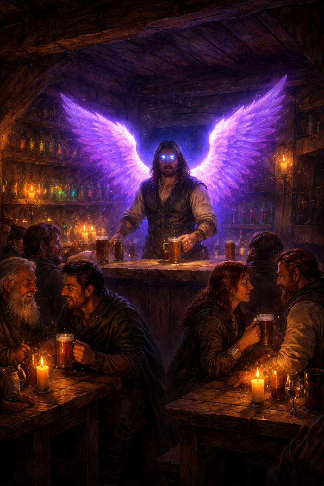

| Draft |
|---|
I've been writing, performing, and recording music since I was 13, tinkering away in my parents' house with whatever I could get my hands on. Over the years I played in bands, landed as a singer and guitarist in Iduna, and still show up every Thursday night to write with those guys, make noise, and catch up. Some things don't change.
Along the way I picked up a BA in psychology, went to Toronto Film School for music production, and made my way through pretty much every recording setup you've heard of: a Tascam 4-track cassette when I was just getting started, Audacity when I got my first computer, then Nuendo, Cubase, Pro Tools, and finally Logic, where I've stayed. By day I work as VP of Client Services and Strategic Partnerships at CTS & Associates, and as Toronto Area Director at Rockstar Music Central, focused on growth, partnerships, and teaching music to the next generation of players.
Music has been a constant through all of it. But here's the honest problem: I have a million unfinished Logic projects. Ideas, fragments, sketches that never went anywhere. Not because they weren't good, but because the moment I opened a DAW I was already thinking about production instead of the song.
That's why I built Drafthaus.
I needed a place, anywhere, any device, to just write. Put the idea down, work out the chords, lyrics, and structure without the pressure of a full session staring back at me. And when something was actually ready, export it: MIDI, audio notes, chord charts, and bring it into Logic with something real to work from.
Drafthaus is that place. It's a songwriter's workbench, not a DAW. The draft comes first. Everything else comes after. I hope it's as useful to you as it's been to me keeping all my ideas organized.